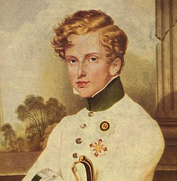
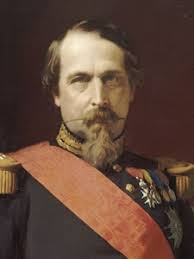
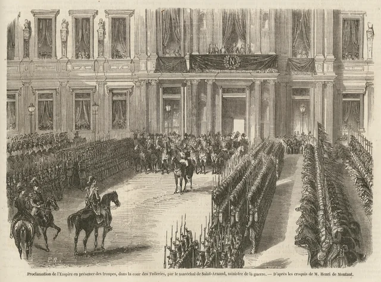

Descendentes Diretos e Indiretos
Linhagem Principal - Casa Bonaparte
Napoleão I teve um filho legítimo: Napoleão II (1811-1832), "Rei de Roma", morreu jovem de tuberculose. Ele cresceu onge de seus pais e foi criado pelo o seu avô francisco I da Austria, Napoleão II teve uma otima relação com sua tia Lelpoldina a futura Imperatriz do Brasil fazendo que os Bonapartes tenham uma conexão proxima com os Bragança por meio dos casamentos.
Napoleão III: O Último Imperador Bonaparte (1808-1873)
harles-Louis Napoléon Bonaparte (20 de abril de 1808 - 9 de janeiro de 1873) foi sobrinho de Napoleão I, filho de Luís Bonaparte (rei holandês imposto pelo imperador) e Hortense de Beauharnais (filha de Josefina). Último monarca francês, reinou como Imperador dos Franceses de 1852 a 1870, marcando a França com modernização radical e ambições imperialistas.
Juventude e Conspirações
Nascido em Paris durante o Império, exilou-se após Waterloo. Educado na Suíça e Alemanha, tornou-se bonapartista convicto. Tentou golpes em 1836 (Estrasburgo) e 1840 (Boulougne), sendo preso na fortaleza de Ham. Fugiu dramaticamente em 1846 disfarçado de operário, retornando durante a Revolução de 1848.
Presidência e Golpe de 1851
Elegeu-se presidente da Segunda República com 74% dos votos, capitalizando nostalgia napoleônica. Frustrado por limites constitucionais, orquestrou o Golpe de 2 de dezembro de 1851, dissolvendo a Assembleia e declarando estado de sítio. Após plebiscito, proclamou-se imperador em 1852 como Napoleão III.
O Segundo Império: Modernização e Autoritarismo
Paris de Haussmann: Revolucionou a capital com o prefeito Georges-Eugène Haussmann, criando boulevards largos, parques (Bois de Boulogne), estações de trem e esgotos modernos. Paris tornou-se a "cidade-luz" modelo para o mundo.
- Infraestrutura: 1.400 km de novas ruas, 100 km de esgotos.
- Economia: Crédito Mobilier, ferrovias, Suez (1869).
- Crédito: Banque de France expandida.
Política Externa Ambiciosa
Buscou "glória imperial" em múltiplas frentes:
Vitórias
- Crimeia (1853-56): Contra Rússia, aliada à Inglaterra.
- Itália (1859): Auxiliou unificação contra Áustria em Magenta e Solferino.
- México (1862-67):> Inicialmente vitorioso, mas fracasso com Maximiliano.
Derrotas
- Sedan (1870): Catastrófica contra Prússia.
- China (1860): Saque de Pequim.
Liberalização e Declínio
Após 1860, enfrentou oposição crescente. Concedeu liberdades (plebiscitos, imprensa), mas perdeu plebiscito de 1870 (7,5 milhões vs 1,5 milhão). Enfraquecido por pedras nos rins, declarou guerra à Prússia por erro
Marie Bonaparte (1882-1962)
Trineta de Lucien Bonaparte (irmão de Napoleão I). Psicanalista, mecenas de Freud, salvou psicanálise do nazismo. Casou-se com Príncipe George da Grécia (1890-1947), filho do Rei George I dos Helenos.
Seu casamento uniu Bonaparte aos Romanov e Oldenburg. Ela teve dois filhos Pedro e Eugenia e durante os anos vinte a monarquia Grega foi deposta, e ela ajudou o seu cunhado o principe Andre e sua esposa Alice que tinham 5 filhos Margaret, Teodora, Cecilie, Sophia e Philipp, que em 1947 se casaria com Elizabeth II do Reino Unido.
Outros Ramos e Influências
- Casa Bonaparte-Wyse: Descendentes de Lucien Bonaparte no Brasil.
- Princesa Caroline Murat: Descendente de Joachim Murat (marechal de Napoleão).
- Conexões reais: Casamentos com Grécia, Bélgica, Países Baixos.
Hoje existem cerca de 200 descendentes diretos vivos de Napoleão I.